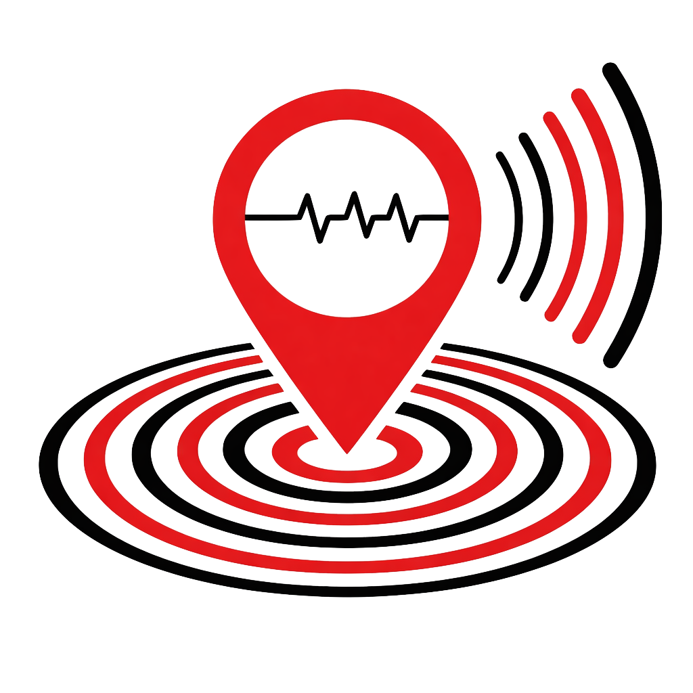

Earthquake Tracker
USGS
Real-time seismic activity data from USGS with advanced filtering and visualization
Center Location
Time Period:
Past Hour
Past 4 Hours
Past 8 Hours
Past 24 Hours
Past 2 Days
Past 3 Days
Past 5 Days
Past 7 Days
Past 15 Days
Past 30 Days
Radius:
km
mi
Magnitude
All
Clear
<2.5
2.5-4.5
4.5-6.0
≥6.0
Depth
All
Clear
Shallow (0-6mi)
Intermediate (6-19mi)
Deep (19-43mi)
Very Deep (>43mi)
Search
Summary
0
Total
Radius: 0 mi
Magnitude
0
Low
<2.5
0
Mid
2.5-4.5
0
High
4.5-6.0
0
Extreme
≥6.0
Depth
0
Shallow
<4.3 mi
0
Intermediate
4.3-19 mi
0
Deep
19-43 mi
0
Very Deep
>43 mi